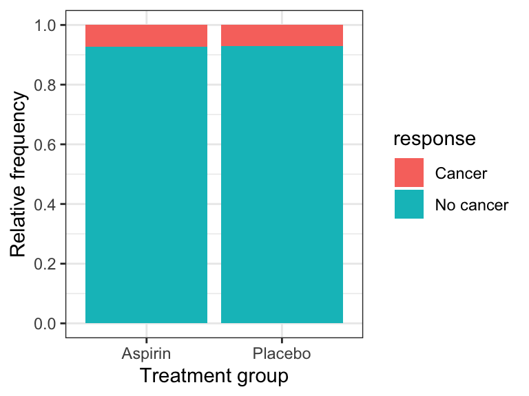
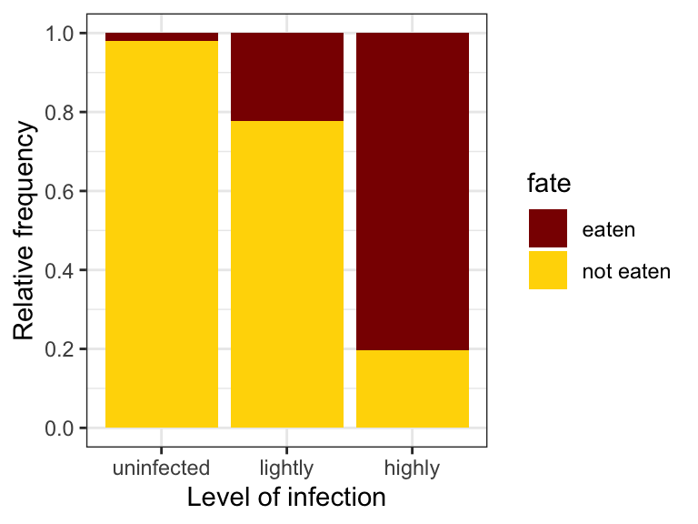

library(dplyr)
library(ggplot2)
library(readr)
library(knitr)
library(janitor)
library(biol202)11 Analyzing associations between two categorical variables
Tutorial learning objectives
- Learn about the odds Ratio for a 2 x 2 contingency table
- Estimate the odds of an outcome
- Estimate the odds ratio
- Estimate the odds of an outcome
- Learn about the Fisher’s Exact Test for a 2 x 2 contingency table
- Learn about the \(\chi\)2 Contingency Test on a m x n contingency table
11.1 Load packages and import data
Load the packages we need for this tutorial:
We’ll also need a new package called epitools, so install that now if you haven’t done so.
library(epitools)We’ll use two datasets described in the Whitlock & Schluter text:
- the
cancerdataset (described in Example 9.2 in the text, page 238) - the
wormdataset (described in Example 9.4 in the text, page 246)
data(cancer)
data(worm)Take a look at the cancer dataset:
cancer %>%
glimpse()
#> Rows: 39,876
#> Columns: 2
#> $ aspirin_treatment <fct> Aspirin, Aspirin, Aspirin, Aspirin, Aspirin, Aspirin…
#> $ response <fct> Cancer, Cancer, Cancer, Cancer, Cancer, Cancer, Canc…And the worm dataset:
worm %>%
glimpse()
#> Rows: 141
#> Columns: 2
#> $ infection <fct> uninfected, lightly, lightly, lightly, lightly, lightly, lig…
#> $ fate <fct> eaten, eaten, eaten, eaten, eaten, eaten, eaten, eaten, eate…Both datasets are formatted “tidy” format. For a refresher on this, review the Biology Procedures and Guidelines document chapter on Tidy data.
11.2 Fisher’s Exact Test
When testing for an association between two categorical variables, the most common test that is used is the \(\chi\)2 contingency test, which is described in the next section.
When the two categorical variables have exactly 2 categories each, and thus yield a 2 x 2 contingency table, the Fisher’s Exact test (a type of contingency test) provides an EXACT P-value, and is therefore preferred over the \(\chi\)2 contingency test (below) when you have a computer to do the calculations.
Often, and especially when the 2 x 2 contingency table deals with a health-related study, one refers to the Odds Ratio, which we’ll learn about below.
In any case, the most powerful statistical test for a 2 x 2 contingency analysis is a Fisher’s Exact test.
11.2.1 Hypothesis statement
We’ll use the cancer study data again for this example, as described in example 9.2 (Page 235) in the text.
The hypotheses for this test:
H0: There is no association between the use of aspirin and the probability of developing cancer.
HA: There is an association between the use of aspirin and the probability of developing cancer.
- We’ll use an \(\alpha\) level of 0.05.
- It is a two-tailed alternative hypothesis
- We’ll use a Fisher’s Exact test to test the null hypothesis, because this is the most powerful test when analyzing a 2 x 2 contingency table.
- There is no test statistic for the Fisher’s Exact test, and nor does it use “degrees of freedom” (the latter you’ll learn about soon, and is only required when we use a theoretical distribution for a test statistic)
HOWEVER: it is recommended that you report the “odds ratio” (which you’ll learn about below) in your concluding statement, along with its appropriate confidence interval; this is a useful stand-in test statistic for the Fisher’s Exact Test
- We also don’t need to worry about assumptions for this test, because it is not relying on a theoretical probability distribution
- It is always a good idea to present a figure to accompany your analysis; in the case of a Fisher’s Exact test, the figure heading will include information about the sample size / total number of observations, whereas the concluding statement typically does not
11.2.2 Display a contingency table
We’ll use the approach we learned in an earlier tutorial to construct a contingency table.
We’ll store the table in an object called “cancer.aspirin.table”, and we’ll make sure to include margin (row and column) totals:
cancer.aspirin.table <- cancer %>%
tabyl(response, aspirin_treatment) %>%
adorn_totals(where = c("row", "col"))Let’s have a look at the result:
cancer.aspirin.table
#> response Aspirin Placebo Total
#> Cancer 1438 1427 2865
#> No cancer 18496 18515 37011
#> Total 19934 19942 39876
Note
When dealing with data from studies on human health (e.g. evaluating healthy versus sick subjects), it is convention to organize the contingency table as shown above, with (i) the outcome of interest (here, cancer) in the top row and the alternative outcome on the bottom row, and (ii) the treatment in the first column and placebo (control group) in the second column. When the data are not related to health outcomes, you do not need to worry about the ordering of the rows of data.
Let’s use the kable function to display a nice looking contingency table:
cancer.aspirin.table %>%
kable(caption = "Contingency table showing the incidence of cancer in relation to experimental treatments", booktabs = TRUE)| response | Aspirin | Placebo | Total |
|---|---|---|---|
| Cancer | 1438 | 1427 | 2865 |
| No cancer | 18496 | 18515 | 37011 |
| Total | 19934 | 19942 | 39876 |
11.2.3 Display a stacked relative frequency bar graph
Let’s visualize the data using a stacked relative frequency bar graph, taking note of the frequency of observations falling in each category (from the contingency table produced previously).
Here we’ll add a bit of new code to format the graph more ideally. We’ll add tick-marks and numbers to the y-axis using scale_y_continuous, which allows us to specify what breaks (ticks) we want on the y-axis.
Here we’re showing “relative frequency” on the y-axis, so this should range from 0 to 1. And we’ll add breaks at intervals of 0.2. Specifically, we use the base seq function to generate a sequence of numbers from 0 to 1, in intervals of 0.2:
cancer %>%
ggplot(aes(x = aspirin_treatment, fill = response)) +
geom_bar(position = "fill") +
scale_y_continuous(breaks = seq(0, 1, by = 0.2)) +
xlab("Treatment group") +
ylab("Relative frequency") +
theme_bw()
The graph shows that the incidence (or relative frequency) of cancer is almost identical in the treatment and control groups.
Note
IMPORTANT It is best practice to display the response variable as the “fill” variable, and the explanatory variable on the x-axis.
11.2.4 Conduct the Fisher’s Exact Test
To do the Fisher’s exact test on the cancer data, it is straightforward, using the fisher.test function from the janitor package.
Warning
There is also fisher.test function in the base R stats package, but it does not conform to the tidy-data conventions used throughout these tutorials. Hence our use of the fisher.test function from the janitor package. When there are multiple packages that use the same name for a function, we can specify the version we want by prefacing the function with the package name and two colons, like this: “janitor::fisher.test()”
See the help file for the janitor version of the fisher.test function:
?janitor::fisher.testThis function requires a two-way “tabyl” as the input, and we already know how to construct such a table.
We’ll put the results in an object called “cancer.fishertest”:
cancer.fishertest <- cancer %>%
tabyl(aspirin_treatment, response) %>%
janitor::fisher.test()Let’s look at the results:
cancer.fishertest
#>
#> Fisher's Exact Test for Count Data
#>
#> data: .
#> p-value = 0.8311
#> alternative hypothesis: true odds ratio is not equal to 1
#> 95 percent confidence interval:
#> 0.9342128 1.0892376
#> sample estimates:
#> odds ratio
#> 1.008744The P-value associated with the test is 0.831, which is clearly greater than our \(\alpha\) of 0.05. We therefore FAIL to reject the null hypothesis.
You’ll notice that the output includes the odds ratio and its 95% confidence interval. The interval it provides is slightly different from the one we’ll learn about below, but when reporting the results of a Fisher’s Exact test it is OK to report the confidence interval provided by the fisher.test function. It is also OK to provide the slightly different one that we learn about below.
Concluding statement
There is no evidence that the probability of developing cancer differs between the control group and the aspirin treatment group (Fisher’s Exact Test; P-value = 0.831; odds ratio = 1.01; 95% CI: 0.934 - 1.089).
Note
TIP Report odds ratios to 2 decimal places, and associated measures of uncertainty to 3 decimal places
11.3 Estimate the Odds of getting sick
The odds of success (O) are the probability of success (p) divided by the probability of failure (1-p):
\(O = \frac{p}{1-p}\)
Curiously, in health-related studies, a “success” is equated with getting ill!!
We’ll use the data stored in the contingency table we produced before, called “cancer.aspirin.table”:
cancer.aspirin.table <- cancer %>%
tabyl(aspirin_treatment, response) %>%
adorn_totals(where = c("row", "col"))
cancer.aspirin.table
#> aspirin_treatment Cancer No cancer Total
#> Aspirin 1438 18496 19934
#> Placebo 1427 18515 19942
#> Total 2865 37011 39876And recall that proportions are calculated using frequencies - which is exactly what we have in the table!
Thus, to estimate the “odds” of getting cancer while taking aspirin, we need to:
- first calculate the proportion (= probability) of women who got cancer while taking aspirin (= \({p}\))
- then calculate the proportion (= probability) of women who remained healthy while taking aspirin (\(= 1-{p}\))
- then calculate the odds as \(O = \frac{p}{1-p}\)
We’ll do all of this in one go using a series of steps strung together with pipes (“%>%”).
Here’s the code, and we’ll explain each step after:
cancer.aspirin.table %>%
filter(aspirin_treatment == "Aspirin") %>%
select(Cancer, Total) %>%
mutate(
propCancer_aspirin = Cancer / Total,
propHealthy_aspirin = 1 - propCancer_aspirin,
oddsCancer_aspirin = propCancer_aspirin/propHealthy_aspirin
)
#> Cancer Total propCancer_aspirin propHealthy_aspirin oddsCancer_aspirin
#> 1438 19934 0.07213806 0.9278619 0.07774654- we first
filterthe table to return only the rows pertaining to the “Aspirin” treatment group; the frequencies that we need for the calculations are in this row - then we
selectthe columns from that row with names “Cancer” and “Total”, which include the frequency of women who got cancer while on Aspirin (under the “Cancer” column), and the total frequency of women in the Aspiring treatment group (in the “Total”) - we then use the
mutatefunction to create three new variables:- “propCancer_aspirin” is calculated at the Cancer frequency divided by the Total frequency (within the Aspirin group)
- “propHealth_aspirin” is calculated simply as 1 minus propCancer_aspirin
- “oddsCancer_aspirin” is calculated last as “propCancer_aspirin/propHealthy_aspirin”
Thus, the odds of getting cancer while on aspirin are about 0.08:1, or equivalently, approximately 1:13 (which you get from dividing 0.0777 into 1).
Alternatively, “the odds are 13 to 1 that a women who took aspirin would not get cancer in the next 10 years”.
CautionActivity
Estimate odds
- Estimate the odds that a woman in the placebo group would get cancer
11.4 Estimate the odds ratio
We’ll use the oddsratio function from the epitools package to calculate the odds ratio (\(\hat{OR}\)) and its 95% confidence interval.
Check out the help file for the function:
?oddsratioThe oddsratio function expects the contingency table to be arranged exactly like this:
# treatment control
# sick a b
# healthy c dIf you were calculating the odds ratio by hand, using the letters shown in the table above, the shortcut formula is:
\[\hat{OR} = \frac{{a/c}}{{b/d}}\]
Here’s the code for producing the appropriately formatted 2 x 2 table as so:
cancer %>%
tabyl(aspirin_treatment, response) %>%
select(Cancer, "No cancer")
#> Cancer No cancer
#> 1438 18496
#> 1427 18515So thats what the oddsratio function is expecting as input.
However, it’s also expecting it in the form of a “matrix” object.
Here’s all the code at once, and we’ll store the output (which comes in the form of a “list”) in an object called “cancer.odds”:
cancer.odds <- cancer %>%
tabyl(aspirin_treatment, response) %>%
select(Cancer, "No cancer") %>%
as.matrix() %>%
oddsratio(method = "wald")We’ve seen the first two lines before. Then:
- we
selectthe two columns associated with the “Cancer” and “No cancer” data. NOTE that because there’s a space in the variable name “No cancer”, we need to use quotation marks around it - Then we use the base
as.matrixfunction to coerce the resulting 2 x 2 table that we’ve created into a matrix type object, which is what theoddsratiofunction is expecting. - lastly we run the
oddsratiofunction, with the argument “method = ‘wald’” (don’t worry about why)
Let’s have a look at the rather verbose output:
cancer.odds
#> $data
#> Cancer No cancer Total
#> row1 1438 18496 19934
#> row2 1427 18515 19942
#> Total 2865 37011 39876
#>
#> $measure
#> NA
#> odds ratio with 95% C.I. estimate lower upper
#> [1,] 1.000000 NA NA
#> [2,] 1.008744 0.9349043 1.088415
#>
#> $p.value
#> NA
#> two-sided midp.exact fisher.exact chi.square
#> [1,] NA NA NA
#> [2,] 0.8224348 0.8310911 0.8223986
#>
#> $correction
#> [1] FALSE
#>
#> attr(,"method")
#> [1] "Unconditional MLE & normal approximation (Wald) CI"This is more information than we need.
What we’re interested in is the information under the “$measure” part, and specifically the “odds ratio with 95% C.I.”.
To limit the output to the relevant information, use this code:
cancer.odds$measure[2,]
#> estimate lower upper
#> 1.0087436 0.9349043 1.0884148This isolates the actual estimate of the odds ratio (\(\hat{OR}\)) with its 95% confidence interval.
The estimate of the odds ratio is around 1.009, and notice the 95% confidence interval encompasses one.
Given that the calculated 95% confidence interval encompasses 1 (representing equal odds among treatment and control groups), there is presently no evidence that the odds of developing cancer differ among control and aspirin treatment groups.
Note
IMPORTANT The odds ratio and its 95% confidence interval are useful to report in any analysis of a 2 x 2 contingency table that deals with health outcomes data like those used here.
11.5 \(\chi\)2 Contingency Test
When the contingency table is of dimensions greater than 2 x 2, the most commonly applied test is the \(\chi\)2 Contingency Test.
For this activity we’re using the “worm” data associated with Example 9.4 on page 244 of the test. Please read the example!
11.5.1 Hypothesis statement
As shown in the text example, we have a 2 x 3 contingency table, and we’re testing for an association between two categorical variables.
Here are the null and alternative hypotheses (compare these to what’s written in the text):
H0: There is no association between the level of trematode parasitism and the frequency (or probability) of being eaten.
HA: There is an association between the level of trematode parasitism and the frequency (or probability) of being eaten.
- We use \(\alpha\) = 0.05.
- It is a two-tailed alternative hypothesis
- We’ll use a contingency test to test the null hypothesis, because this is appropriate for analyzing for association between two categorical variables, and when the resulting contingency table has dimension greater than 2 x 2.
- We will use the \(\chi\)2 test statistic, with degrees of freedom equal to (r-1)(c-1), where “r” is the number of rows, and “c” is the number of colums, so (2-1)(3-1) = 2.
- We must check assumptions of the \(\chi\)2 contingency test
- It is always a good idea to present a figure to accompany your analysis; in the case of a contingency test, the figure heading will include information about the sample size / total number of observations
11.5.2 Display the contingency table
Let’s generate a contingency table:
worm %>%
tabyl(fate, infection) %>%
adorn_totals(where = c("row", "col"))
#> fate highly lightly uninfected Total
#> eaten 37 10 1 48
#> not eaten 9 35 49 93
#> Total 46 45 50 141Hmm, the ordering of the categories of the categorical (factor) variable “infection” is the opposite to what is displayed in the text.
Note
TIP The ordering of the categories is not actually crucial to this type of analysis, but it’s certainly better practice to show them in appropriate order!
infection is already stored as a “factor” variable in the worm dataset, so all we need to do is change the order of its existing categories (consult this resource for more on factor levels generally).
Check the current ordering of the levels using the levels function:
levels(worm$infection)
#> [1] "highly" "lightly" "uninfected"Now change the ordering as follows:
worm$infection <- factor(worm$infection, levels = c("uninfected", "lightly", "highly"))
levels(worm$infection)
#> [1] "uninfected" "lightly" "highly"Now re-display the contingency table, first storing it in an object “worm.table”:
worm.table <- worm %>%
tabyl(fate, infection) %>%
adorn_totals(where = c("row", "col"))
worm.table
#> fate uninfected lightly highly Total
#> eaten 1 10 37 48
#> not eaten 49 35 9 93
#> Total 50 45 46 141That’s better!
Visualize it nicely with kable:
kable(worm.table)| fate | uninfected | lightly | highly | Total |
|---|---|---|---|---|
| eaten | 1 | 10 | 37 | 48 |
| not eaten | 49 | 35 | 9 | 93 |
| Total | 50 | 45 | 46 | 141 |
11.5.3 Visualize the association
Here’s a stacked relative frequency bar graph with an ideal figure caption included:
worm %>%
ggplot(aes(x = infection, fill = fate)) +
geom_bar(position = "fill") +
scale_fill_manual(values = c("darkred", "gold")) +
scale_y_continuous(breaks = seq(0, 1, by = 0.2)) +
xlab("Level of infection") +
ylab("Relative frequency") +
theme_bw()
In the code above we manually specified the two fill colours using the scale_fill_manual function.
11.5.4 Check the assumptions
The \(\chi\)2 contingency test (also known as association test) has assumptions that must be checked prior to proceeding — these are the same assumptions you checked for the \(\chi\)2 goodness-of-fit test in the previous tutorial:
- none of the categories should have an expected frequency of less than one
- no more than 20% of the categories should have expected frequencies less than five
To test these assumptions, we need to actually conduct the test, because in doing so R calculates the expected frequencies for us.
Conduct the test using the chisq.test function from janitor package. NOTE this again overlaps with a function name from the base R package, so we’ll need to specify that we want the “janitor” version of the function.
We need our contingency table as input to the function, but this time without margin totals.
We’ll assign the results to an object “worm.chisq.results”:
worm.chisq.results <- worm %>%
tabyl(fate, infection) %>%
janitor::chisq.test()Have a look at the output:
worm.chisq.results
#>
#> Pearson's Chi-squared test
#>
#> data: .
#> X-squared = 69.756, df = 2, p-value = 7.124e-16Although only a few bits of information are provided here, the object actually contains a lot more information.
Don’t try getting an overview of the object using our usual glimpse or summary approach — worm.chisq.results is a list of test results, not a dataset, so those functions would just dump a confusing listing of its internal components rather than anything useful.
Instead, simply use this code:
names(worm.chisq.results)
#> [1] "statistic" "parameter" "p.value" "method" "data.name" "observed"
#> [7] "expected" "residuals" "stdres"As you can see, one of the names is expected. This is what holds our expected frequencies (and note that these values do not need to be whole numbers, unlike the observed frequencies):
kable(worm.chisq.results$expected)| fate | uninfected | lightly | highly | |
|---|---|---|---|---|
| eaten | eaten | 17.02128 | 15.31915 | 15.65957 |
| not eaten | not eaten | 32.97872 | 29.68085 | 30.34043 |
We see that all our assumptions are met: none of the cells (cross-classified categories) in the table have an expected frequency of less than one, and no more than 20% of the cells have expected frequencies less than five.
11.5.5 Get the results of the test
We can see the results of the \(\chi\)2 test by simply typing the name of the results object:
worm.chisq.results
#>
#> Pearson's Chi-squared test
#>
#> data: .
#> X-squared = 69.756, df = 2, p-value = 7.124e-16This shows a very large value of \(\chi\)2 (69.76) and a very small P-value - much smaller than our stated \(\alpha\). So we reject the null hypothesis.
Concluding statement
The probability of being eaten is significantly associated with the level of trematode parasitism (\(\chi\)2 contingency test; df = 2; \(\chi\)2 = 69.76; P < 0.001). Based on our stacked bar graph (Figure 11.2), the probability of being eaten increases substantially with increasing intensity of parasitism.